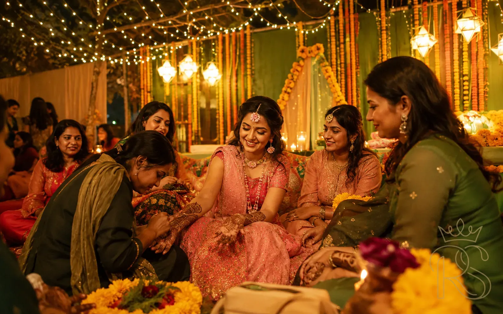
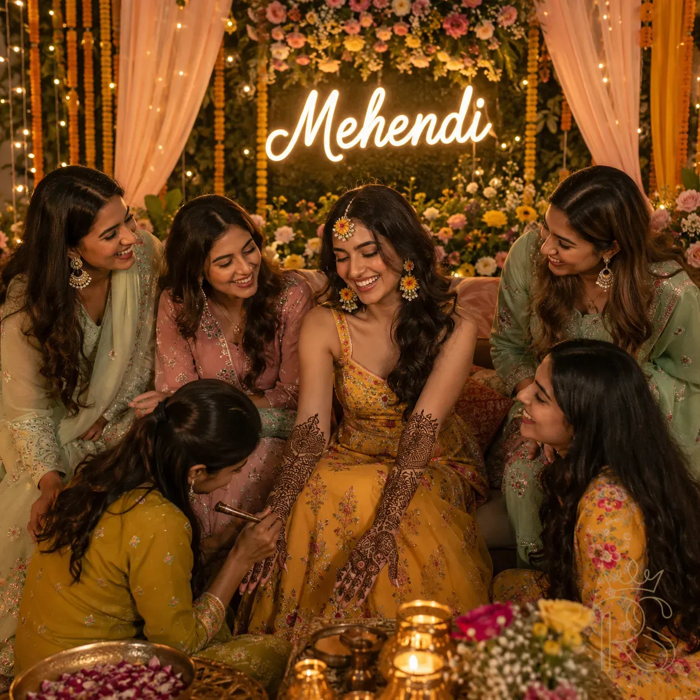

The Mehendi ceremony is the evening of a thousand details — an artist bent low over your hands, the earthy-sweet smell of fresh henna filling the room, music drifting in from somewhere, your closest people gathered around you. It is intimate, unhurried, and deeply personal. And yet, behind every beautiful Mehendi night is a surprising amount of planning: the right artist booked far enough in advance, the design chosen and briefed, the décor set to create those photographs you will print and frame. This guide covers every single thing you need to plan it perfectly.
🌿
Also Called
Mehndi / Henna Night / Ratijaga
📅
Timing
1–2 days before the wedding
⏳
Bridal Mehndi Duration
4–8 hours for full bridal
🎨
Best Darkness
Leave on 6–8 hrs minimum
The Ritual
What Is the Mehendi Ceremony & What Makes It Special?

The Mehendi ceremony brings together the bride's closest circle for an evening of art, music, and quiet celebration — hours before the wedding-week energy peaks.
Mehendi Ceremony
Henna Tradition
Pre-Wedding Function
Indian Wedding Ritual
The Mehendi ceremony is one of the most beloved pre-wedding rituals across Hindu, Muslim, and Sikh wedding traditions in India and throughout the Indian diaspora. Rooted in the ancient practice of applying henna — a paste made from the dried and ground leaves of the Lawsonia inermis plant — the ceremony traditionally takes place one to two days before the wedding, when the henna has time to develop its deepest, richest colour.
In Hindu traditions, the Mehendi is considered auspicious for multiple reasons. The deeper the henna stains on the bride's skin, the stronger and more loving the marriage is believed to be — which is why brides are asked to leave their mehndi on as long as possible. Many families also hide the groom's initials or name within the intricate bridal design, and the groom must search for them on the wedding night: a playful, intimate ritual that has survived centuries of changing fashions.
"The Mehendi ceremony is the one function in your wedding week where time actually slows down. Hours pass. Stories are shared. The artist works in silence. You simply sit, and let the night hold you."
Across Muslim traditions in India, the Mehendi night — often called the Mehndi or Shaadi ki Raat — carries equally deep significance, with henna applied in elaborate patterns to the bride's hands and feet as a symbol of joy, blessing, and fertility for the new marriage. In Punjabi Sikh weddings, the function is festive and musical, with women singing folk songs (called Boliyan) while the mehndi is applied.
3000+
Years of henna use as a bridal beauty and ritual tradition across South Asia and the Middle East
4–8 hrs
Time a skilled artist typically spends on a full bridal mehndi from fingertips to elbows and feet
72 hrs
The optimal window after application for henna to reach its peak colour depth on the skin
In 2026, the Mehendi ceremony has become a fully designed event — as visually curated as a reception, with custom décor, photography-ready setups, coordinated guest outfits, live music or a dedicated DJ, and sometimes even a separate catered dinner. Yet beneath all that beautiful staging, the essential magic of the Mehendi remains unchanged: the intimacy of sitting still while someone creates art on your skin, surrounded by the women who love you most.
The Most Important Decision
How to Choose (& Book) the Right Mehndi Artist

Your mehndi artist's hands will be on your skin for up to eight hours on one of the most significant days of your life. Choose them with the same care you give to your lehenga.
Mehndi Artist
How to Book
Artist Selection
Your mehndi artist is, arguably, the single most important vendor you will book for the Mehendi ceremony. The photographer captures what is there — and what is there, for hours, is your hands. A brilliant artist on the right day will create something you will look at in photographs for the rest of your life. A rushed or poorly matched one will be equally visible in every single frame.
Top bridal mehndi artists in India's major wedding cities — Mumbai, Delhi, Jaipur, Hyderabad, Bengaluru — are routinely booked 6 to 9 months in advance, particularly for peak wedding season dates between October and February. If your wedding falls within that window, begin your artist search the moment you have a confirmed date.
What to Look for in a Portfolio
- Consistency across multiple brides — not just one or two showcase shots but at least 15–20 distinct bridal works showing the same quality level.
- Clean line work — even at high complexity, the lines should be crisp, not wobbly or uneven. Zoom into photographs.
- Filling quality — the filled areas of the design should be smooth and even, not patchy or incomplete.
- The darkening results — request before-and-after photographs showing the same design freshly applied and after 48 hours of darkening. This tells you how well the artist's henna quality and technique result in actual colour.
- Style range — a great artist is fluent in multiple styles. Be wary of artists whose portfolio looks identical across every bride.
- Guest hand quality — look at the guest and family designs too. These are done faster and under more pressure. How they hold up reveals skill level.


Left: Always ask to see healed (48-hour) photos of their work — not just freshly applied. Right: A pre-ceremony design consultation ensures the artist understands your exact vision.
Questions to Ask Before Booking
- Do you use natural henna or chemical/black henna? (Always insist on natural henna — black henna can cause severe allergic reactions and skin scarring.)
- How long will the bridal mehndi take from start to finish?
- Do you bring a team for guests, or do you work alone?
- What is included in the bridal package — hands only, or hands and feet?
- Can I share design references and will you replicate a specific style?
- What is your cancellation and rescheduling policy?
- Do you charge a travel fee outside your city?
⚠️
Black Henna Warning: Never allow black henna (also called "chemical mehndi" or "kali mehndi") near your skin. It contains para-phenylenediamine (PPD), a chemical that can cause severe allergic reactions, chemical burns, and permanent scarring. Authentic natural henna produces a colour range from orange to deep brown — never jet black.
💡
Booking Tip: Always do a trial application at least 3 weeks before the wedding — ideally on the inside of your wrist or a patch of forearm. This tests for allergy, shows you the artist's working style, and gives you a preview of the colour depth their henna achieves on your specific skin tone.
Know Your Aesthetic
Mehndi Design Styles: A Visual Guide to Every Major Tradition

Rajasthani, Arabic, Indo-Arabic fusion, and minimalist modern — the four dominant mehndi styles of the 2026 bridal season.
Rajasthani Mehndi
Arabic Mehndi
Indo-Arabic
Minimalist Mehndi
Bridal Designs
Choosing a mehndi design style is one of the most consequential aesthetic decisions of your pre-wedding preparation. It should be consistent with the overall visual language of your wedding — a maximalist bride in a heavily embroidered Benarasi silk will look incongruous with a sparse minimal mehndi, just as a modern bride in a contemporary silhouette might find an extremely dense Rajasthani design overwhelming. Here is a clear guide to each major style:

North India · Traditional
Rajasthani (Marwari)
The most intricate of all bridal mehndi traditions. Fine jali (net) patterns cover every millimetre of skin from fingertips to elbow. Elephants, peacocks, camels, paisleys, and a hidden groom figure are signature elements. Suited to traditional brides who want maximum visual impact. Requires the most skilled artist and the most time.

Pan-India · Modern Classic
Arabic Mehndi
Characterised by large, bold floral motifs with deliberate open space between elements. The negative skin space is as much a part of the design as the henna itself. Faster to apply, highly photogenic, and suits brides who want a dramatic but less densely covered look. Particularly popular in Hyderabad, Mumbai, and Kerala.

All India · Most Popular 2026
Indo-Arabic Fusion
The most requested bridal style in 2026. Combines the fine-line intricacy of Rajasthani jali with the bold florals of Arabic design. Gives brides the best of both worlds — visual richness and the photogenic open-space quality of Arabic. Works beautifully on all skin tones and across all wedding aesthetics.

Contemporary · Growing Trend
Minimalist & Geometric
For the contemporary bride who finds traditional density overwhelming. Single mandala on the palm, fine-line geometric wrist cuffs, delicate finger patterns — and deliberate, generous negative space. A particularly strong aesthetic choice for brides who want their jewellery, not their mehndi, to be the visual hero. Fast-growing in urban weddings.
💡
Personalisation Trend 2026: The most talked-about mehndi design element of this wedding season is storytelling panels — miniature illustrated scenes from the couple's love story embedded within the bridal design. Think: the city where they first met, the restaurant where he proposed, their pets, shared hobbies. Discuss this with your artist at least 4 weeks in advance so they can sketch it out.
Design Style vs. Wedding Aesthetic — Quick Match Guide
| Mehndi Style |
Best Paired With |
Application Time |
Suits Skin Tone |
Photo Impact |
| Rajasthani |
Traditional, heritage, maximalist weddings |
6–8 hours |
All, especially deeper tones |
✦✦✦ Maximum |
| Arabic |
Contemporary, modern, luxury resort weddings |
2–4 hours |
All skin tones beautifully |
✦✦ Strong |
| Indo-Arabic |
All wedding styles — the universal choice |
4–6 hours |
All — especially medium tones |
✦✦✦ Maximum |
| Minimalist |
Micro-weddings, bohemian, destination, modern |
1–2 hours |
Best on medium–fair tones |
✦✦ Elegant |
Fashion Guide
What to Wear to Your Mehendi Ceremony

Green — in all its jewel-toned, sage, and bottle variations — is the definitive Mehendi bride colour. Gold, copper, and ivory are its most beautiful companions.
Mehendi Outfit
Bride Look
Green Lehenga
Flower Jewellery
Mehendi outfits have one non-negotiable rule: the hands must be visible and unobstructed. Everything else — silhouette, colour, fabric — is a creative canvas. That said, there are strong traditions and some genuinely brilliant 2026 trends worth knowing about.
The Bride: Colour Palette
Green is the ceremonial colour of Mehendi — the colour of the henna plant itself, deeply embedded in the visual language of the night. But green is an enormous family of shades, and the right one depends on your skin tone, the depth of your wedding décor, and how you want to feel:
Left: A heavily embroidered lehenga for a grand Mehendi celebration. Right: A relaxed mirror-work sharara for a garden or intimate setting — both equally stunning.
The Most Important Outfit Rule: Jewellery
Because your hands will be occupied with henna for several hours, and you cannot touch or adjust anything, Mehendi jewellery must be decided before the ceremony begins and designed to stay put. The 2026 trend that solves this beautifully is flower jewellery: matha pattis, ear cuffs, wrist cuffs, and hair venis all crafted from fresh jasmine, roses, and marigold — lightweight, fragrant, incredibly photogenic, and deeply traditional.
Flower jewellery — the jasmine matha patti, tuberose wrist cuff, and mogra hair veni — is the quintessential Mehendi accessory in 2026.
For Guests & Family
Most couples now include a dress code card with their Mehendi invitations. The most popular 2026 guest palettes are: all-green (every shade from sage to emerald), green-and-gold, and the increasingly popular "earthy florals" palette where guests wear peacock, rust, ochre, and warm green together. A coordinated guest group creates extraordinary photographs when seen from above — consider sharing a colour palette reference image with invitations.
Create the Setting
Mehendi Ceremony Décor: Themes, Ideas & Inspiration

The Mehendi ceremony is the most atmospherically rich of all Indian pre-wedding functions — low seating, warm candlelight, jasmine in the air.
Mehendi Décor
Ceremony Setup
Floral Design
Mehendi Stage
Mehendi décor exists in the sweet spot between the wild abundance of the Haldi and the formal grandeur of the reception. It should feel alive and sensory — jasmine-heavy, softly lit, textured with fabric and brass — but intimate enough that conversations can flow and the mehndi artist's work remains the centrepiece of the evening.
"The best Mehendi décor is the kind you barely notice consciously — you just feel warm, comfortable, and completely surrounded by beauty."
5 Mehendi Décor Themes Defining 2026
Left: Mughal garden — the lush, royal approach with roses, lanterns, and Persian carpets. Right: Boho garden — rattan, macramé, and peacock feathers for the contemporary bride.
- Mughal Garden: Arched floral entrances, Persian carpet seating, diwan beds, gold lanterns, jasmine wall panels, red rose and white tuberose flower combinations. The most opulent Mehendi look, suited to heritage venues and grand celebrations.
- Terracotta & Brass: Earthy terracotta pots in clusters, brass diyas and urlis filled with flower petals and water, banana leaf runners, wooden low seating with jute-edged cushions. Deeply rooted in Indian visual tradition, looks extraordinary in natural and fire light.
- Bohemian Garden: Macramé backdrops, rattan furniture, peacock feathers, dried pampas and banana palms, fairy light canopy, embroidered cushions in jewel tones. The most popular outdoor Mehendi look for modern brides, particularly at destination weddings.
- Floral Canopy: An overhead installation of hanging jasmine, tuberose, and rose garlands creating a living floral ceiling. Spectacular in photographs taken from any angle. Works in both open-air and indoor settings with sufficient ceiling height.
- Royal Haveli Night: Inspired by the painted havelis of Rajasthan — block-print fabric panels as backdrops, old brass oil lamps (divas), antique mirror furniture, embroidered jaipur-print cushions, and a profusion of marigold and jasmine together. Romantic, distinctly Indian, and deeply photogenic.
💡
Décor Budget Tip: For a Mehendi, invest most heavily in lighting and fragrance — not flowers. The right combination of string lights, diyas, and candles transforms even a modest floral setup into something magical. And jasmine (mogra) is inexpensive but creates the most intoxicating atmosphere of any flower available in India.
Set the Mood
Music, Entertainment & Mehendi Night Atmosphere

Live folk musicians — a dholak player, a shehnai artist, or a Giddha group — create an atmosphere that no curated playlist can fully replicate.
Mehendi Music
Dholak Songs
Entertainment
Wedding Night Vibe
The Mehendi is, by nature, an evening when music is inseparable from atmosphere. Unlike the structured performance energy of a sangeet, Mehendi music should feel organic — rising and falling with the energy of the room, stopping naturally for conversations, and gently filling the silences when the artist is working in concentration.
3 Music Formats to Consider
- Live Dholak Group: The most traditional and beloved option. 2–3 women playing dholak and singing folk wedding songs (Giddha in Punjab, Sohar and Banna in Rajasthan, Suggi Habba in Karnataka). The interactive, call-and-response nature of folk singing pulls even reluctant guests into participation. Budget: ₹15,000–₹60,000 depending on city and group.
- Acoustic Duo or Solo Vocalist: A singer with a harmonium or guitar playing a curated set of classic Bollywood songs from wedding films, with a voice that fills the space without amplification. Intimate, conversational, and surprisingly emotional when the songs chosen are meaningful to the couple.
- Curated DJ / Playlist: The most flexible and budget-friendly option. Works beautifully when you invest time in the playlist — not just Mehendi songs, but the music that defines the couple's relationship: the song that was playing when they first danced, the artist they saw in concert together. Make it personal.
The Definitive 2026 Mehendi Playlist — Timeless Picks
- 01
Mehendi Laga Ke Rakhna — DDLJ
The iconic anthem · Mandatory
- 02
Piya Tose Naina Lage Re — Guide
Soulful & emotional · Perfect for artist-working moments
- 03
Tenu Leke — Salaam-E-Ishq
Romantic & warm · Mid-evening energy
- 04
Morni Banke — Badhaai Ho
Celebratory folk · Gets everyone moving
- 05
Laal Ishq — Goliyon Ki Raasleela
Moody & rich · Atmospheric evening opener
- 06
Saibo — Shor in the City
Intimate & layered · While henna dries
- 07
Nagada Sang Dhol — Goliyon Ki Raasleela
High energy · Closing dance segment
- 08
Udi Udi Jaye — Raees
Euphoric & festive · Perfect after dinner reveal
💡
Entertainment Idea: One of the most beloved Mehendi evening traditions is the dholak circle — where all the women sit in a circle around the bride, passing the dholak, each person sharing a memory or wish as they play. It is informal, deeply personal, and produces the most genuine emotional moments of the entire wedding week.
After the Artist Leaves
How to Care for Your Mehndi After Application

The most important step after your mehndi is applied is patience. The longer you leave the paste, the deeper and richer the final colour.
Mehndi Aftercare
Henna Tips
Darkening Tricks
Bridal Mehndi
The richness of your final mehndi colour is determined almost entirely by what happens in the 12–24 hours after application. Here is a precise aftercare protocol trusted by top bridal mehndi artists across India:
- Leave the paste on for a minimum of 6 hours — ideally 8 hours or overnight. The longer the paste stays moist and in contact with your skin, the deeper the stain will set. Do not rush this.
- Apply a sugar-lemon sealant when the paste starts to dry — a solution of lemon juice and sugar applied gently over the dried paste helps it stay moist longer and intensifies the final colour. Your artist will often do this; if not, prepare a small bottle in advance.
- Keep your hands warm — heat accelerates the henna oxidation process. Sitting near a warm lamp, holding your palms near a diya flame briefly, or using a hair dryer on a low warm setting helps deepen the colour.
- Scrape, do not wash — when removing the paste, scrape it off with a butter knife or the edge of a card. Do not wash with water for at least 12 hours after scraping, and never scrub.
- Apply oil immediately after scraping — coconut oil, mustard oil, or a dedicated henna aftercare oil applied generously will lock in the colour and add a beautiful sheen. Do this every few hours for the first day.
- Avoid water and soap on your hands for 24 hours — water is the single biggest enemy of fresh henna. Even washing vegetables or doing the dishes will strip colour. Wear thin cotton gloves for household tasks.
- The real colour appears in 48–72 hours — the orange you see immediately after scraping will deepen progressively over 48–72 hours to its final dark brown-maroon shade. Do not judge the colour on the first morning.
⚠️
Day-Before-Wedding Note: If you are applying mehndi the evening before your wedding, plan your morning routine carefully. Avoid handwashing dishes, pool use, or anything that submerges your hands. Moisturise with oil in the morning. By the time you are in your bridal lehenga, the colour will be at or near its peak.
Complete Planning Guide
Your Mehendi Ceremony Planning Timeline

The earlier you start planning your Mehendi, the more relaxed the run-up will be. Artist bookings, in particular, require significant lead time.
Mehendi Checklist
Wedding Planning
Timeline
-
6M
6 Months Before
Research & Book Your Mehndi Artist
Begin following mehndi artists on Instagram in your city. Shortlist 3–5. Review portfolios meticulously. Reach out to confirm availability for your date and request a consultation. Artists for peak season (Oct–Feb) and destination weddings are booked far in advance at this stage.
-
4M
4 Months Before
Finalise Venue & Décor Direction
Confirm whether your Mehendi will be at home, a family terrace, or a venue. Begin building your décor mood board — settle on a theme and primary palette. If using a decorator, begin conversations now with your confirmed date and brief.
-
3M
3 Months Before
Book Photographer & Discuss Shot List
Ensure your wedding photographer covers the Mehendi — or book a separate photographer if they don't. Discuss your must-have shots: the artist's hands, the bride's expression during application, the full-design reveal, the dholak circle, overhead group shots. Brief them on your décor theme and colour palette.
-
8W
8 Weeks Before
Design Consultation with Artist
Meet (in person or online) with your confirmed artist. Share your design references, your wedding lehenga colour, your jewellery choices, and any personalisation requests (couple's story panels, initials). A skilled artist will sketch a rough design concept for your approval.
-
6W
6 Weeks Before
Trial Application & Allergy Check
Schedule a trial application of at least one hand with your artist. This tests allergy, darkening quality, and speed. You will also see the design style in practice. Make any refinements at this stage — not the week before the ceremony.
-
3W
3 Weeks Before
Finalise Guest List, Dress Code & Music
Send formal Mehendi invitations with the colour-coded dress code. Confirm your music format (live musicians, DJ, or playlist) and book if using live performers. Finalise catering — Mehendi evenings typically have a cocktail-style dinner or heavy snack service.
-
1W
1 Week Before
Confirm All Vendors & Prepare Aftercare Kit
Final confirmation call with artist, decorator, photographer, and caterer. Prepare your mehndi aftercare kit: a bottle of lemon-sugar sealant, coconut or mustard oil, thin cotton gloves, a soft cloth. Stop using any bleaching, waxing, or exfoliating treatments on your hands so your skin is in its natural state for the henna.
-
Eve
Day Before the Ceremony
Final Prep — Skin, Nails & Outfit
Do not apply any moisturiser, oil, or cream to your hands or feet — it creates a barrier and prevents the henna from staining well. Wear your Mehendi outfit to make sure it still fits perfectly. Charge your backup phone for photographs. Set out your aftercare kit within reach. Get an early night.
"You will not remember every detail of your Mehendi night. But you will remember how it felt — the warmth of the light, the weight of jasmine in the air, someone you love holding your hand very still."